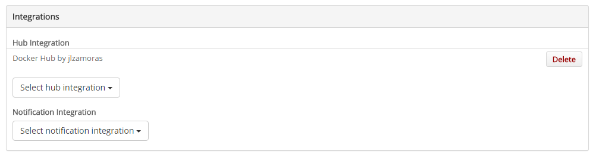
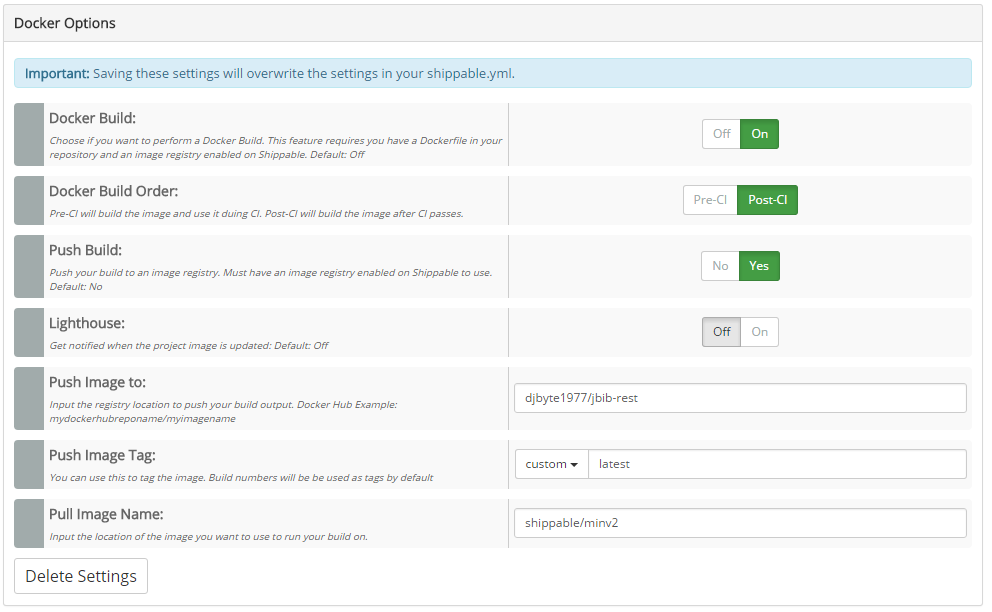
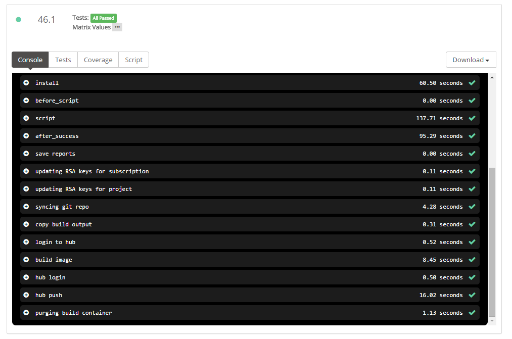

5. (1,5 puntos) Despliegue en plataforma en la nube
En esta sesión vamos a utilizar los conocimientos que hemos adquirido durante las sesiones de PaaS para desplegar la parte del servidor en la nube, utilizando OpenShift.
Como resumen realizaremos las siguientes tareas:
-
Revisión del proyecto pom.xml del proyecto.
-
Revisión del entorno local de pruebas.
-
Configuración y despliegue de la capa de servidor en OpenShift.
-
Utilizar Integración Continua mediante Shippable a partir de nuestro repositorio en Bitbucket.
-
Construir una imagen de Docker y publicarla en Docker Hub.
5.1. Revisión del proyecto pom.xml
La definición actual del proyecto pom.xml tiene algunos aspectos que debemos modificar, sobre todo pensando en las distintas fases por las que avanzará la aplicación antes de su publicación en OpenShift y la construcción de la imagen Docker. Estos cambio suponen.
-
Revisar que el proyecto sólo incluya aquellas librerías que el servidor de aplicaciones no proporcione. Salvo causa justificada ya sabemos que es recomendable utilizar el conjunto de librerías del servidor pues entre otras cosas están validadas para trabajar en conjunto.
-
Parametrizar la versión del servidor de aplicaciones y de las herramientas importantes como Arquillian. Recordad que en local estamos utilizando WildFly 8.2.1 pero en OpenShift se puede trabajar con WildFly 8, 9 o 10 y esto facilita el poder validar la aplicación en un entorno u otro.
-
Perfiles. El pom.xml original no define ningún perfil. En el escenario en el que nos vamos a mover definiremos tres perfiles distintos:
-
arquillian-wildfly-remote este perfil es el que hemos utilizado hasta ahora implícitamente para la compilación y pruebas. Para su correcto funcionamiento requiere una instancia en ejecución del servidor de aplicaciones.
-
arquillian-wildfly-managed este perfil permite iniciar automáticamente una instancia de WildFly siempre y cuando tengamos definido la variable de entorno JBOSS_HOME apuntando a la carpeta de WildFly /usr/local/wildfly/. Este perfil nos permitiría compilar y lanzar las pruebas unitarias pero nos impide el ejecutar las pruebas integradas ya que éstas están definidas para ejecutarse contra la aplicación desplegada en un servidor de aplicaciones.
-
openshift como ya sabemos es el perfil que utilizará OpenShift para compilar el proyecto: mvn clean package -Popenshift -DskipTests
-
El objetivo final es definir unos procesos de compilación y pruebas que nos sirvan tanto para trabajar en local como para utilizar integración y despliegue continuos.
El proyecto quedaría estructurado de la siguiente forma:
<?xml version="1.0" encoding="UTF-8"?>
<project xmlns="http://maven.apache.org/POM/4.0.0" xmlns:xsi="http://www.w3.org/2001/XMLSchema-instance"
xsi:schemaLocation="http://maven.apache.org/POM/4.0.0 http://maven.apache.org/xsd/maven-4.0.0.xsd">
<modelVersion>4.0.0</modelVersion>
<groupId>org.expertojava</groupId>
<artifactId>jbib-rest</artifactId>
<version>1.0-SNAPSHOT</version>
<packaging>war</packaging>
<name>jbib-rest</name>
<properties>
<project.build.sourceEncoding>UTF-8</project.build.sourceEncoding>
<version.wildfly>8.2.1.Final</version.wildfly>
<version.arquillian>1.1.10.Final</version.arquillian>
<version.arquillian-persistence>1.0.0.Alpha7</version.arquillian-persistence>
</properties>
<dependencyManagement>
<dependencies>
<dependency>
<groupId>org.jboss.arquillian</groupId>
<artifactId>arquillian-bom</artifactId>
<version>${version.arquillian}</version>
<scope>import</scope>
<type>pom</type>
</dependency>
</dependencies>
</dependencyManagement>
<dependencies>
<dependency>
<groupId>javax</groupId>
<artifactId>javaee-web-api</artifactId>
<version>7.0</version>
<scope>provided</scope>
</dependency>
<!-- rest -->
<dependency>
<groupId>com.fasterxml.jackson.core</groupId>
<artifactId>jackson-annotations</artifactId>
<version>2.6.4</version>
<scope>provided</scope>
</dependency>
<!-- Logging -->
<dependency>
<groupId>commons-logging</groupId>
<artifactId>commons-logging</artifactId>
<version>1.2</version>
<scope>provided</scope>
</dependency>
<!-- Tests -->
<dependency>
<groupId>log4j</groupId>
<artifactId>log4j</artifactId>
<version>1.2.17</version>
<scope>test</scope>
</dependency>
<dependency>
<groupId>org.slf4j</groupId>
<artifactId>slf4j-simple</artifactId>
<version>1.7.13</version>
<scope>test</scope>
</dependency>
<dependency>
<groupId>junit</groupId>
<artifactId>junit</artifactId>
<version>4.11</version>
<scope>test</scope>
</dependency>
<dependency>
<groupId>org.slf4j</groupId>
<artifactId>slf4j-api</artifactId>
<version>1.7.7</version>
<scope>test</scope>
</dependency>
<!-- JPA -->
<dependency>
<groupId>org.dbunit</groupId>
<artifactId>dbunit</artifactId>
<version>2.5.0</version>
<scope>test</scope>
</dependency>
<dependency>
<groupId>mysql</groupId>
<artifactId>mysql-connector-java</artifactId>
<version>5.1.33</version>
<scope>test</scope>
</dependency>
<dependency>
<groupId>org.hibernate.javax.persistence</groupId>
<artifactId>hibernate-jpa-2.1-api</artifactId>
<version>1.0.0.Final</version>
<scope>test</scope>
</dependency>
<dependency>
<groupId>org.hibernate</groupId>
<artifactId>hibernate-entitymanager</artifactId>
<version>4.3.7.Final</version>
<scope>test</scope>
</dependency>
<!-- Hibernate validator -->
<dependency>
<groupId>org.hibernate</groupId>
<artifactId>hibernate-validator</artifactId>
<version>5.1.3.Final</version>
<scope>test</scope>
</dependency>
<dependency>
<groupId>javax.el</groupId>
<artifactId>javax.el-api</artifactId>
<version>2.2.4</version>
<scope>test</scope>
</dependency>
<dependency>
<groupId>org.glassfish.web</groupId>
<artifactId>el-impl</artifactId>
<version>2.2</version>
<scope>test</scope>
</dependency>
<!-- Arquillian -->
<dependency>
<groupId>org.jboss.arquillian.junit</groupId>
<artifactId>arquillian-junit-container</artifactId>
<scope>test</scope>
</dependency>
<!-- Arquillian persistence -->
<dependency>
<groupId>org.jboss.arquillian.extension</groupId>
<artifactId>arquillian-persistence-api</artifactId>
<version>${version.arquillian-persistence}</version>
<scope>test</scope>
</dependency>
<dependency>
<groupId>org.jboss.arquillian.extension</groupId>
<artifactId>arquillian-persistence-core</artifactId>
<version>${version.arquillian-persistence}</version>
<scope>test</scope>
</dependency>
<dependency>
<groupId>org.jboss.arquillian.extension</groupId>
<artifactId>arquillian-persistence-dbunit</artifactId>
<version>${version.arquillian-persistence}</version>
<scope>test</scope>
</dependency>
<dependency>
<groupId>org.jboss.arquillian.extension</groupId>
<artifactId>arquillian-persistence-spi</artifactId>
<version>${version.arquillian-persistence}</version>
<scope>test</scope>
</dependency>
<!--Hamcrest Json -->
<dependency>
<groupId>uk.co.datumedge</groupId>
<artifactId>hamcrest-json</artifactId>
<version>0.2</version>
<scope>test</scope>
</dependency>
</dependencies>
<profiles>
<profile>
<id>arquillian-wildfly-remote</id>
<dependencies>
<dependency>
<groupId>org.wildfly</groupId>
<artifactId>wildfly-arquillian-container-remote</artifactId>
<version>${version.wildfly}</version>
<scope>test</scope>
</dependency>
<!--Jaxrs Api cliente -->
<dependency>
<groupId>org.jboss.resteasy</groupId>
<artifactId>resteasy-client</artifactId>
<version>3.0.13.Final</version>
<scope>test</scope>
</dependency>
<!--Librerías para serializar/deserializar json -->
<dependency>
<groupId>org.jboss.resteasy</groupId>
<artifactId>resteasy-jackson-provider</artifactId>
<version>3.0.13.Final</version>
<scope>test</scope>
</dependency>
<!--Jaxrs API json -->
<dependency>
<groupId>org.jboss.resteasy</groupId>
<artifactId>resteasy-json-p-provider</artifactId>
<version>3.0.13.Final</version>
<scope>test</scope>
</dependency>
</dependencies>
<build>
<finalName>${project.name}</finalName>
<plugins>
<plugin>
<groupId>org.apache.maven.plugins</groupId>
<artifactId>maven-compiler-plugin</artifactId>
<version>3.1</version>
<configuration>
<source>1.7</source>
<target>1.7</target>
</configuration>
</plugin>
<plugin>
<groupId>org.apache.maven.plugins</groupId>
<artifactId>maven-war-plugin</artifactId>
<version>2.3</version>
<configuration>
<failOnMissingWebXml>false</failOnMissingWebXml>
</configuration>
</plugin>
<plugin>
<groupId>org.wildfly.plugins</groupId>
<artifactId>wildfly-maven-plugin</artifactId>
<version>1.0.2.Final</version>
<configuration>
<hostname>localhost</hostname>
<port>9990</port>
</configuration>
<!-- forzamos el despliegue después de empaquetar
y antes de ejecutar los tests REST -->
<executions>
<execution>
<id>wildfly-deploy</id>
<phase>pre-integration-test</phase>
<goals>
<goal>deploy</goal>
</goals>
</execution>
</executions>
</plugin>
<plugin>
<groupId>org.apache.maven.plugins</groupId>
<artifactId>maven-surefire-plugin</artifactId>
<version>2.19</version>
<configuration>
<redirectTestOutputToFile>true</redirectTestOutputToFile>
<reportsDirectory>shippable/testresults</reportsDirectory>
<skipTests>${skipTests}</skipTests>
</configuration>
<dependencies>
<dependency>
<groupId>org.apache.maven.surefire</groupId>
<artifactId>surefire-junit4</artifactId>
<version>2.7.2</version>
</dependency>
</dependencies>
</plugin>
<plugin>
<groupId>org.codehaus.mojo</groupId>
<artifactId>cobertura-maven-plugin</artifactId>
<version>2.7</version>
<configuration>
<format>xml</format>
<aggregate>true</aggregate>
<outputDirectory>shippable/codecoverage</outputDirectory>
</configuration>
</plugin>
<!-- ejecución de la goal failsafe:test
durante la fase integration-test -->
<plugin>
<groupId>org.apache.maven.plugins</groupId>
<artifactId>maven-failsafe-plugin</artifactId>
<version>2.19</version>
<configuration>
<skipITs>${skipITs}</skipITs>
<skipTests>false</skipTests>
</configuration>
<executions>
<execution>
<goals>
<goal>integration-test</goal>
<goal>verify</goal>
</goals>
</execution>
</executions>
</plugin>
</plugins>
</build>
</profile>
<profile>
<id>arquillian-wildfly-managed</id>
<dependencies>
<dependency>
<groupId>org.wildfly</groupId>
<artifactId>wildfly-arquillian-container-managed</artifactId>
<version>${version.wildfly}</version>
<scope>test</scope>
</dependency>
</dependencies>
<build>
<finalName>${project.name}</finalName>
<plugins>
<plugin>
<groupId>org.apache.maven.plugins</groupId>
<artifactId>maven-compiler-plugin</artifactId>
<version>3.1</version>
<configuration>
<source>1.7</source>
<target>1.7</target>
</configuration>
</plugin>
<plugin>
<groupId>org.codehaus.mojo</groupId>
<artifactId>cobertura-maven-plugin</artifactId>
<version>2.6</version>
<configuration>
<format>xml</format>
<maxmem>256m</maxmem>
<aggregate>true</aggregate>
<outputDirectory>shippable/codecoverage</outputDirectory>
</configuration>
</plugin>
<plugin>
<groupId>org.apache.maven.plugins</groupId>
<artifactId>maven-surefire-plugin</artifactId>
<version>2.19</version>
<configuration>
<redirectTestOutputToFile>true</redirectTestOutputToFile>
<reportsDirectory>shippable/testresults</reportsDirectory>
</configuration>
<dependencies>
<dependency>
<groupId>org.apache.maven.surefire</groupId>
<artifactId>surefire-junit4</artifactId>
<version>2.7.2</version>
</dependency>
</dependencies>
</plugin>
<plugin>
<groupId>org.apache.maven.plugins</groupId>
<artifactId>maven-war-plugin</artifactId>
<version>2.3</version>
<configuration>
<failOnMissingWebXml>false</failOnMissingWebXml>
</configuration>
</plugin>
</plugins>
</build>
</profile>
</profiles>
</project>|
Pruebas integradas REST
Estas pruebas se situan exclusivamente en el contenedor remoto ya que requieren de un despliegue sobre una instancia en ejecución.
|
5.1.1. Tareas
-
Reemplazar el pom.xml antiguo por el propuesto.
-
Añadir el perfil openshift para que se pueda desplegar correctamente en PaaS.
-
Definir el perfil openshift como perfil por defecto. Esto nos permite que por defecto no lancemos las pruebas integradas y nos permite compilar de forma rápida tanto en local como en OpenShift (seguiremos teniendo que especificar que no se ejecuten los test mediante el parámetro -DskipTests o bien configurarlo en el propio profile).
-
Definir un MANIFEST.MF que referencie a los módulos org.apache.commons.logging y org.apache.log4j que forman parte del paquete de librerías de WildFly y no es necesario incluirlos en el WAR.
Con estos cambios la aplicación contendrá únicamente las clases del proyecto ocupando 74kb aproximadamente gracias a las librerías del propio servidor. Además, el pom admitirá una serie de parámetros como el perfil o la versión de WildFly con la que queremos trabajar:
mvn [goal]… -P[perfil] -Dversion.wildfly[versión]
5.2. Revisión del entorno local de pruebas
Shippable es una herramienta de integración continua que facilita una serie de servicios para realizar las pruebas y permite utilizar imágenes de Docker personalizadas como máquina de pruebas si lo que nos ofrece por defecto no se ajusta a nuestras necesidades.
La imagen de pruebas incorpora una instancia de mysql pero nos propociona un usuario que no dispone de todos los permisos. Concretamente podemos crear bases de datos nuevas pero no definir nuevos usuarios, con lo que nos obliga a utilizar un usuario "shippable" en las pruebas que queramos realizar. Para no complicarnos demasiado lo que vamos a hacer es adaptar nuestro proyecto al entorno de pruebas que propiorciona Shippable dando permisos en local al usuario shippable:
grant all on biblioteca to "shippable@%" identified by "";El '%' nos permite que podamos utilizar este usuario tanto en conexiones locales como remotas. Alternativamente podéis utilizar la herramienta Mysql Workbench y de forma visual crear el usuario shippable y asignarle todos los permisos sobre el esquema biblioteca.
5.2.1. Tareas
-
Exportar el contenido actual de la base de datos biblioteca a un fichero SQL mediante el comando:
mysqldump -u root -p biblioteca > fichero.sqlEl fichero.sql lo necesitaremos para inicializar la base de datos de producción (OpenShift).
-
Dar permisos al usuario shippable (sin contraseña) sobre nuestra base de datos local.
-
Modificar los casos de prueba.
-
Modificar la configuración de acceso a base de datos de los Test para que utilicen el usuario shippable que acabamos de crear:
.getConnection( "jdbc:mysql://localhost/biblioteca", "shippable", ""); .... this.databaseTester = new JdbcDatabaseTester("com.mysql.jdbc.Driver", "jdbc:mysql://localhost:3306/biblioteca", "shippable", "") -
Crear un Datasource de nombre biblioteca-ds.xml en /src/test/resources:
<?xml version="1.0" encoding="UTF-8"?> <datasources xmlns="http://www.jboss.org/ironjacamar/schema" xmlns:xsi="http://www.w3.org/2001/XMLSchema-instance" xsi:schemaLocation="http://www.jboss.org/ironjacamar/schema http://docs.jboss.org/ironjacamar/schema/datasources_1_0.xsd"> <xa-datasource jndi-name="java:/datasources/BibliotecaDS" pool-name="MySQLTest" enabled="true" use-ccm="true"> <xa-datasource-property name="URL"> jdbc:mysql://localhost/biblioteca </xa-datasource-property> <xa-datasource-class>com.mysql.jdbc.jdbc2.optional.MysqlXADataSource</xa-datasource-class> <driver>mysql-connector-java-5.1.33.jar_com.mysql.jdbc.Driver_5_1</driver> <security> <user-name>shippable</user-name> </security> </xa-datasource> </datasources>
-
5.3. Configuración y despliegue de la capa de servidor en OpenShift
En esta parte crearemos una aplicación escalable con soporte de BD MySQL y añadiremos el código fuente de la capa REST.
5.3.1. Tareas
-
Crear una aplicación escalable, de nombre jbibrest con los cartridges de WildFly 8 y MySQL. (Si por lentitud os tardase demasiado podéis configurarla como no escalable, es una buena práctica pero no es requerido por el ejercicio).
-
Eliminar el código fuente de ejemplo (pom.xml y carpeta src).
git rm -r src/ pom.xml
git commit -m "borrado plantilla"-
Inicializar manualmente el contenido de la BD MySQL de OpenShift a partir del fichero de backup que creamos en el primer apartado.
-
Añadir un repositorio Git remoto (el de bitbucket):
git remote add bitbucket https://[usuario]@bitbucket.org/[usuario]/[repositorio].git-
Hacer un "pull" del repositorio de Bitbucket para traernos los fuentes de nuestro proyecto:
git pull bitbucket master-
Definir en el fichero standalone.xml de la configuración, el datasource XA BibliotecaDS. Fijaos que OpenShift por defecto crea una BD de WildFly con el mismo nombre que la aplicación (jbibrest) por tanto utilizad esta BD en el datasource. Recordad que debéis trabajar con las variables de entorno en lugar de con valores fijos.
-
Hacer un push al repositorio de Bitbucket para almacenar el proyecto actualizado con los ficheros de configuración de OpenShift.
git add .
git commit -m "integración con OpenShift"
git push bitbucket master-
Hacer un push al repositorio de OpenShift y asegurarnos de que la aplicación está funcionando correctamente en http://jbibrest-[usuario].rhcloud.com.
git push origin master-
Por último, dar de alta dos usuarios en el ApplicationRealm de WildFly:
| Usuario | Password | Rol |
|---|---|---|
vicente.casamayor |
vicente |
usuario |
anabel.garcia |
anabel |
usuario |
5.4. Utilizar Integración Continua mediante Shippable a partir de nuestro repositorio en Bitbucket.
Dada la lentitud de los gear gratuitos de OpenShift es preferible utilizar un proveedor de CI externo, como pueda ser Shippable. Shippable tiene varias ventajas sobre otras opciones.
-
Nos proporciona una instancia de CI de forma gratuita.
-
Integración con OpenShift, GitHub y BitBucket.
-
Uso muy sencillo, mediante un script YAML.
-
Uso de imágenes de Docker como base para realizar las pruebas. Se configura el entorno de pruebas desde cero en cada prueba con los elementos que necesitamos.
-
Admite tareas de integración continua PreCI y PostCI a partir de otras imágenes de Docker. Podemos construir una imagen previamente y utilizarla para ejecutar las pruebas o bien construir una imagen con los binarios resultado de la compilación y pruebas.
-
Acceso simple mediante Oauth utilizando vuestras credenciales de Bitbucket.
La idea es que ante cualquier cambio que subáis a vuestro repositorio de BitBucket, se active una instancia de Shippable, recoja estos cambios, haga las pruebas que hayamos definido y si todo es correcto, lo despliegue en el gear de OpenShift.
5.4.1. Tareas
-
Crear un script de integración continua donde se detallan los pasos para configurar el entorno y realizar las pruebas. El fichero se llamará shippable.yml y se situará al mismo nivel que el fichero pom.xml.
El contenido del fichero será el siguiente:
language: java
jdk:
- openjdk7
env:
global:
- JBOSS_HOME=/tmp/wildfly-8.2.1.Final
- JBOSS_SERVER_LOCATION=http://download.jboss.org/wildfly/8.2.1.Final/wildfly-8.2.1.Final.tar.gz
- OPENSHIFT_REPO=ssh://567f9c8f0c1e6651f4000122@jbibrest-jlzamora.rhcloud.com/~/git/jbibrest.git
- MYSQL_DRIVER=http://central.maven.org/maven2/mysql/mysql-connector-java/5.1.33/mysql-connector-java-5.1.33.jar
- MYSQL_DRIVER_DEST=/tmp/wildfly-8.2.1.Final/standalone/deployments/mysql-connector-java-5.1.33.jar
before_install:
- if [ ! -e $JBOSS_HOME ]; then curl -s $JBOSS_SERVER_LOCATION | tar zx -C /tmp; fi
- curl -s $MYSQL_DRIVER >$MYSQL_DRIVER_DEST
- cp src/test/resources/biblioteca-ds.xml $JBOSS_HOME/standalone/deployments
- ls /tmp/wildfly-8.2.1.Final/standalone/deployments/
- mysql -e "create database biblioteca;"
- sh $JBOSS_HOME/bin/add-user.sh --silent=true -a vicente.casamayor vicente
- sh $JBOSS_HOME/bin/add-user.sh --silent=true -a anabel.garcia anabel
- echo "vicente.casamayor=usuario">> $JBOSS_HOME/standalone/configuration/application-roles.properties
- echo "anabel.garcia=usuario">> $JBOSS_HOME/standalone/configuration/application-roles.properties
- sh $JBOSS_HOME/bin/standalone.sh &
- git remote -v | grep ^openshift || git remote add openshift $OPENSHIFT_REPO
before_script:
- mkdir -p shippable/testresults
- mkdir -p shippable/codecoverage
- mkdir -p shippable/buildoutput
script:
- cp deployments/ROOT.war ./shippable/buildoutput/jbib-rest.war
- mvn clean verify -Parquillian-wildfly-remote -Dwildfly.version=8.2.1.Final
- mvn cobertura:cobertura -Dtest=modelo/* -Parquillian-wildfly-remote
after_success:
- git push -f openshift $BRANCH:masterEste script descarga y descomprime la misma versión de WildFly que se utilizará en OpenShift, prepara el entorno para lanzar las pruebas y si las pruebas concluyen con éxito hace un push del código al repositorio Git de OpenShift.
Debeis modificar el script con la ruta SSH a vuestro gear concreto
-
Acceder a http://www.shippable.com autenticándonos con el usuario/password de Bitbucket. Esto nos permitirá listar nuestros proyectos.
-
En el panel de la derecha saldrá nuestro usuario de BitBucket y podremos seleccionar un repositorio para habilitar integración continua. Seleccionar el repositorio del proyecto de la capa REST.
-
Obtener la "Developer Key" de nuestra sesión en Shippable. Esta clave se debe registrar en OpenShift para que quede constancia de que damos permisos a Shippable para subir código a los repositorios Git gestionados por OpenShift. Dentro de Shippable, pulsaremos en el icono de la rueda, situado al lado de nuestro usuario y se mostrará la key:
-
En Settings de OpenShift, daremos de alta esta clave como public key. El nombre asociado puede ser el que queráis, por ejemplo Shippable
Hacer un push únicamente al repositorio de Bitbucket. Si lo hemos hecho todo bien, se iniciará una tarea de compilación en Shippable y podremos seguir paso a paso todo el proceso. Si falla algo, revisad la ejecuión de los pasos en busca del error concreto que se haya producido.
Si todo es correcto, para trabajar en futuras sesiones de integración bastaría con clonarnos el repositorio de Bitbucket a local y gracias a Shippable podremos desplegar nuestros cambios en OpenShift sin necesidad de tener nada configurado, únicamente subiendo los cambios a Bitbucket.
5.5. Construir una imagen de Docker y publicarla en Docker Hub
Si las pruebas han ido bien y la aplicación se ha desplegado en OpenShift, queremos añadir un paso mas que nos permita generar una imagen de Docker con nuestro backend Rest que podamos utilizar para nuestras pruebas de Fixing, en conjunto con una base de datos local.
Técnicamente es posible y es mejor solución el definir también la base de datos en otro contenedor y desplegarlos de forma conjunta pero nos limitaremos a los conocimientos de Docker que hemos adquirido en la primera sesión.
5.5.1. Tareas
-
Configurar la base de datos local Mysql para que admita conexiones remotas. Como vamos a trabajar con contenedores, estos sólamente se pueden comunicar con el resto de servicios mediante comunicación TCP/IP. Para ello modificaremos el fichero my.cnf:
/etc/mysql/my.cnf # cambiar el parámetro bind adress por de 127.0.0.1 a 0.0.0.0 # a continuación reiniciar la BD $ sudo /etc/init.d/mysql restart -
El los settings del proyecto jbib-rest dentro de Shippable, dar de alta una nueva integración. Las integraciones son enlaces con repositorios de imágenes y entre ellos seleccionaremos "Docker" (Docker Hub). Será necesario indicar nuestro usuario, password y datos de contacto:
 -
Crear un catasource de nombre biblioteca-docker-ds.xml y a partir del que ya tenéis (biblioteca-ds) y añadirlo al repositorio. Dentro de este datasouce debéis eliminar la referencia a la maquina "localhost" dentro de la cadena de conexión de base de datos y en su lugar apuntar a una máquina llamada "docker".
-
Añadir un fichero Dockerfile al proyecto: Tenéis que basaros en el que vimos en la primera sesión incorporando las siguientes instrucciones:
RUN /opt/jboss/wildfly/bin/add-user.sh --silent -a vicente.casamayor vicente RUN /opt/jboss/wildfly/bin/add-user.sh --silent -a anabel.garcia anabel RUN curl http://central.maven.org/maven2/mysql/mysql-connector-java/5.1.33/mysql-connector-java-5.1.33.jar > /opt/jboss/wildfly/standalone/deployments/mysql-connector-java-5.1.33.jar COPY src/test/resources/biblioteca-docker-ds.xml /opt/jboss/wildfly/standalone/deployments/ COPY buildoutput/jbib-rest.war /opt/jboss/wildfly/standalone/deployments/En el fichero shippable.yml especificábamos una carpeta donde dejar los binarios compilados y en el Dockerfile recuperaremos el WAR y lo integraremos en la nueva imagen.
-
Habilitar la opción de generar una imagen de docker una vez se haya completado la tarea de integración continua. Esto lo podéis hacer en la opción settings de Shippable, dentro del proyecto . Configurar los siguientes parámetros susituyendo el nombre de usuario por el vuestro:
 -
Ejecutar de nuevo la build. Si todo funciona bien se completarán los siguientes pasos.

En vuestro repositorio de Docker Hub tiene que parecer una nueva imagen con la etiqueta "latest", que es la que hemos especificado en las propiedades del proyecto.
Para poder probar la imagen en local bastaría con ejecutar:
$ ifconfig docker0 #Sólo 1 vez, para averiguar la DIRECCION_IP del Host de Docker
$ docker run -it --add-host=docker:DIRECCION_IP -p 8080:8080 -p 9990:9990 djbyte1977/jbib-restSi habéis completado todos los pasos, el contenedor se podrá conectar a la BD local y la aplicación funcionará correctamente.
5.6. Entrega
La fecha de entrega del proyecto será el jueves 4 de febrero.
Añade la etiqueta sesion-4 al respositorio después de hacer el último commit y sube los cambios al repositorio jbibrest-proyint-expertojava en Bitbucket:
$ git tag -a sesion-4 -m "Sesión 4"
$ git push origin --tagsRecuerda dar premiso de lectura/escritura al usuario entregas-expertojava y confirmar la entrega en Moodle. Una de las pruebas será modificar el código fuente y comprobar que los cambios se despliegan correctamente en OpenShift.
Adicionalmente revisaremos que la aplicación esté desplegada correctamente en OpenShift accediendo a la URL convenida:
http://jbibrest-[usuario].rhcloud.com.
Y también probaremos vuestra imagen publicada en Docker Hub. Debéis indicarnos vuestro usuario, bien en la entrega o bien en un fichero Readme.md o leeme.txt del proyecto.
Para verificar que la parte de integración continua funciona correctamente os pediremos un fichero de log de Shippable. Este se puede obtener a partir de la opción Script, que aparece en la build junto con el resto de información resultante de la ejecución.